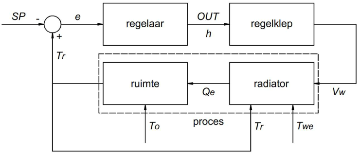

In dit artikel, dat in de eerste plaats een educatieve opzet heeft, wordt de simulatie van een ruimtetemperatuurregeling in verwarmingsbedrijf gedemonstreerd. De ruimte wordt verwarmd met een radiator. Het betreft een overkoepelend artikel met links naar onderliggende artikelen die theoretische aspecten behandelen over de verschillende bouwstenen die de regelkring samenstellen. Om deze theoretische beschouwingen aanschouwelijk en praktisch te maken is een rechttoe rechtaan computerprogramma ontwikkeld waarmee is getracht om de regelkringbouwstenen vereenvoudigd te modelleren. Toepassingen van het computerprogramma, dat is geschreven in de programmeertaal Python, worden gedemonstreerd in diverse Jupyter Notebooks. Experimenteren met de computersimulaties is mogelijk met een aantal eenvoudige webapplicaties. Met deze webapps kan op een visuele manier, via grafieken, inzicht worden verworven over hoe een ruimtetemperatuurregeling zich kan gedragen afhankelijk van de variabelen die dit gedrag beïnvloeden.
Blokschema van de teruggekoppelde regelkring

We beschouwen een ruimte die wordt verwarmd d.m.v. een radiator. De gemeten ruimtetemperatuur (Tr) wordt aan de REGELAAR teruggekoppeld. Op basis van de deviatie (e) tussen de gemeten en de gewenste ruimtetemperatuur (SP) berekent de regelaar het regelcommando (OUT). We onderscheiden drie types van regelaars:
Met het regelcommando wordt de klepmotor van een REGELKLEP aangestuurd. Het regelcommando stemt overeen met de gevraagde klepstand (h) van de regelklep. De klepstand kan algemeen elke waarde aannemen tussen 0% (klep volledig dicht) en 100% (klep volledig open). Daarmee wordt het volumedebiet van het verwarmingswater (Vw) geregeld dat door de radiator stroomt. De regelklep wordt in het regelproces gekenmerkt door de effectieve klepkarakteristiek. Deze karakteristiek geeft het verband weer tussen de klepstand (h) en het overeenkomstig volumedebiet (Vw) dat de regelklep in de installatie doorlaat. Het volumedebiet wordt daarbij uitgedrukt in procenten van het maximum volumedebiet dat de regelklep in volledig open stand zal doorlaten. Om de effectieve klepkarakteristiek van een geïnstalleerde regelklep te kennen, moet de klepautoriteit van de regelklep in het leidingstelsel zijn bepaald. Noteer dat in het geval van een aan/uit-regeling of een tijdproportionele regeling de regelklep maar twee standen kan innemen: ofwel volledig open (regelcommando OUT = 100%), ofwel volledig dicht (regelcommando OUT = 0%). De effectieve klepkarakteristiek en de klepautoriteit spelen in deze regelingen in feite geen rol van betekenis. Enkel in het geval van een modulerende regeling kan de klepstand h elke waarde tussen 0% en 100% innemen.
De output van de RADIATOR is het warmtevermogen (Qe) dat aan de ruimte wordt afgegeven. Naast het volumedebiet (Vw) zal ook de wateraanvoertemperatuur (Twe) en de ruimtetemperatuur (Tr) de warmteafgifte van de radiator (Qe) beïnvloeden. De radiator wordt in het regelproces gekenmerkt door de radiatorkarakteristiek die het verband weergeeft tussen het volumedebiet dat door de radiator stroomt, uitgedrukt in procenten van het maximaal volumedebiet, en het warmteafgiftevermogen van de radiator, uitgedrukt in procenten van het maximaal warmteafgiftevermogen dat afgegeven wordt wanneer het maximaal volumedebiet door de radiator stroomt. Het verloop van de radiatorkarakteristiek zal tevens afhangen van het verschil tussen de wateraanvoer- en de ruimtetemperatuur.
De combinatie van de effectieve klepkarakteristiek met de radiatorkarakteristiek geeft het verband weer tussen het regelcommando en de warmteafgifte van de radiator. In het geval van een modulerende regeling (PID-regeling), waarbij de regelklep elke stand tussen 0% en 100% kan innemen, is het van belang dat dit verband zoveel mogelijk lineair verloopt, zodat bv. een klepstand van 25% ook zou overeenstemmen met een warmteafgifte van ca. 25% van de maximumwaarde . Gezien het convex verloop van de radiatorkarakteristiek, is een equiprocentuele regelklep doorgaans de beste keuze.
De radiator wordt samen met de RUIMTE tot het PROCES gerekend. De inputs van het proces zijn de buitentemperatuur (To), de aanvoertemperatuur (Twe) en het volumedebiet (Vw) van het verwarmingswater dat door de radiator stroomt. De buitentemperatuur (To) is de stoorgrootheid van het proces die een regeling noodzakelijk maakt om de gewenste binnentemperatuur in de ruimte te kunnen handhaven. Het volumedebiet (Vw) is de corrigerende grootheid waarmee de stoorinvloed vanwege de buitentemperatuur (To) wordt bestreden. De wateraanvoertemperatuur (Twe) kan eveneens als een bijkomende corrigerende grootheid worden toegepast via een wateraanvoertemperatuurregelaar. De ruimtetemperatuur (Tr) is de geregelde procesgrootheid. Het is de uitgang van het proces, maar terzelfder tijd ook een (inwendige) ingang van het proces, aangezien de warmteafgifte van de radiator mede door de ruimtetemperatuur wordt beïnvloed.
Om het dynamisch verloop van de ruimtetemperatuur in de tijd te kunnen simuleren is een thermisch model van de ruimte nodig. Een ruimte zal hier vereenvoudigd worden voorgesteld door een lineair thermisch netwerk dat slechts uit twee temperatuurknopen is samengesteld, nl. het luchtvolume van de ruimte en de bouwschil die deze ruimte omhult (in de regeltheorie een 2de orde systeem genoemd). De radiator draagt warmtevermogen over aan de temperatuurknoop «luchtvolume». Warmtevermogen stroomt, te wijten aan het verschil tussen binnen- en buitentemperatuur, via de temperatuurknoop «bouwschil» naar de buitenomgeving. Wegens de thermische capaciteit van de bouwschil wordt er ook thermische energie in de bouwschil opgeslagen. Het thermisch model van de ruimte maakt het mogelijk om het dynamisch verloop van de ruimtetemperatuur (Tr) in de tijd te simuleren voor een zeker verloop van de buitentemperatuur (To), van het volumedebiet verwarmingswater (Vw) doorheen de radiator en van de wateraanvoertemperatuur aan de ingang van de radiator.
De theoretische fundatie waarop het computerprogramma steunt om de regelbouwstenen in computercode voor te stellen wordt in een aantal afzonderlijke PDF-documenten uitgelegd:
De mogelijkheden van het computerprogramma worden gedemonstreerd in een aantal Jupyter Notebooks. De broncode (Python-code) van het computerprogramma kan men hier terugvinden.
In deze notebook wordt de invloed van het volumedebiet verwarmingswater op de warmteafgifte van een radiator onderzocht. In het eerste deel wordt het vereist volumedebiet onder ontwerpcondities bepaald, alsook het volumedebiet dat nog onder deelbelasting is vereist om de gewenste temperatuur te handhaven. In het tweede deel wordt onderzocht welke ruimtetemperatuur zich in stationair regime zou instellen bij een gegeven buitentemperatuur i.f.v. het volumedebiet verwarmingswater dat door de radiator stroomt.
In deze notebook wordt de invloed van de aanvoertemperatuur van het verwarmingswater op de warmteafgifte van een radiator onderzocht. De waarde van de wateraanvoertemperatuur onder ontwerpcondities is een ontwerpkeuze. Vervolgens kan nagegaan worden welke wateraanvoertemperatuur onder deelbelasting nodig is, als het volumedebiet verwarmingswater ongewijzigd blijft. Aansluitend wordt de mengregeling bekeken. Er wordt nagegaan in welke mate «primair» verwarmingswater met constante temperatuur afkomstig van de verwarmingsketel en retourwater afkomstig van de radiator moeten gemengd worden om de gewenste ruimtetemperatuur te handhaven i.f.v. de buitentemperatuur.
De radiatorkarakteristiek is een grafiek die het verband weergeeft tussen het volumedebiet door de radiator en de warmteafgifte van de radiator, beide uitgedrukt in procenten van hun resp. maximale waarde, bij een gegeven wateraanvoertemperatuur en een gegeven ruimtetemperatuur. In het eerste deel van deze notebook wordt nagegaan wat de invloed is van de wateraanvoertemperatuur op de radiatorkarakteristiek waarbij de ruimtetemperatuur constant blijft. In het tweede deel van deze notebook wordt nagegaan wat de invloed is van de ruimtetemperatuur op de radiatorkarakteristiek waarbij de wateraanvoertemperatuur constant blijft. Men zal vaststellen dat de procentuele radiatorkarakteristiek quasi ongewijzigd blijft.
EFFECTIEVE KLEPKARAKTERISTIEK VAN EEN TWEEWEGREGELKLEP
In deze notebook wordt de effectieve klepkarakteristiek van een equiprocentuele regelklep bepaald voor verschillende klepautoriteiten van de geïnstalleerde regelklep.
EFFECTIEVE THERMISCHE CAPACITEIT VAN EEN BUITENMUUR
In deze notebook wordt de methode gedemonstreerd waarmee de effectieve thermische capaciteit van een bouwdeel, in casu een buitenmuur, wordt berekend. De effectieve thermische capaciteit wordt aangewend in het vereenvoudigd ruimtemodel om de ruimtetemperatuurregeling te simuleren.
RUIMTEVERWARMING: DYNAMISCHE SIMULATIE MET AAN/UIT-REGELING
In deze notebook wordt de opmaak van de diverse bouwstenen van de regelkring in het computerprogramma gedemonstreerd en vervolgens de simulatie gemaakt van de regelkring, waarbij een aan/uit-regelaar is aangewend. Naast de aan/uit-regelaar kan ook een wateraanvoertemperatuurregelaar toegevoegd worden die de aanvoertemperatuur van het verwarmingswater naar de radiator selecteert i.f.v. de buitentemperatuur. De aan/uit-regelaar is een zgn. feedback controller. Deze reageert pas wanneer de storing van de procesgrootheid zich al heeft voorgedaan en tracht de afwijking te corrigeren. De wateraanvoertemperatuurregelaar daarentegen is een zgn. feedforward controller. Deze kijkt naar de stoorgrootheid en anticipeert op veranderingen van de stoorgrootheid.
De grafieken hieronder tonen de resultaten van de simulatie:
De eerste grafiek toont het tijdsverloop van de temperatuur van het verwarmingswater (T_we), van de ruimte (T_in), van de bouwschil (T_bm) en van de buitentemperatuur (T_out).
De tweede grafiek toont het tijdsverloop van de warmteafgifte van de radiator (Q_e).
De derde grafiek toont het tijdsverloop van het regelcommando (out) en de kleppositie (h).
De wateraanvoertemperatuurregeling (outdoor reset control) is actief. De regelkarakteristiek (ook wel stooklijn genoemd) werd berekend op basis van de ontwerpcondities (o.a. op basis van een ruimtetemperatuur van 22 °C). Tussen 6 h en 12 h wordt het setpoint op de aan/uit-regelaar met 3 K verlaagd van 22 °C naar 19 °C. Men stelt vast dat de aan/uit-regelaar dan tussenkomt.
Men kan ook zelf met de aan/uit-ruimtemperatuurregeling experimenteren. Via onderstaande link-knop kan men de webapplicatie opstarten.

Het kan wel een paar minuten duren alvorens de webapplicatie volledig is opgestart (de applicatie draait op een publieke server mybinder.org). Op de webpagina die zal verschijnen, selecteer on_off_control. Er zal dan een volgende webpagina openen. Klik nu op on_off_control.ipynb. De eigenlijke webapplicatie zal nu opstarten. Het kan even duren voordat de gebruikersinterface volledig zichtbaar wordt. Het programma berekent namelijk eerst een simulatie met default waarden. Uiteindelijk zal een invulformulier op het scherm verschijnen. Door parameterwaarden te wijzigen, bv. de gemiddelde buitentemperatuur of de coëfficiënten van de stooklijn (outdoor reset line) kan men nagaan welk effect dit zal hebben op het gedrag van de regelkring. Men kan ook de radiator, het ruimtemodel, de regelparameters van de aan/uit-regelaar, etc. veranderen. Wanneer op de 'submit'-knop wordt gedrukt, wordt de simulatie gemaakt en de resultaten afgebeeld in grafieken zoals hierboven.
Naast de webapp met simulatie van de aan/uit-regeling, zijn er ook twee webapps met simulaties van de PID en PWM regeling toegevoegd.